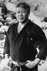

Country:United States, 85 minutes
Spoken languages:English
Genres:Sci-Fi, Action
Director(s):Stuart Gordon
Writer(s):Joe Haldeman
Video Codec:Unknown
Number: 2678


Certification:PG
Storyline:
50 years after a nuclear war, the two superpowers handle territorial disputes in a different way. Each fields a giant robot to fight one-on-one battles in official matches, each piloted by a man inside, known as robot jockeys or jox. The contest for possession of Alaska will be fought by two of the best. The conscientious Achilles fights for the Americans. Opposing him is a Russian, Alexander.
Cast: 
Medium: Bluray,
Comments: Part of: Enter the Video Store - Empire of Screams
Loaned: No
Aspect ratio: Unknown